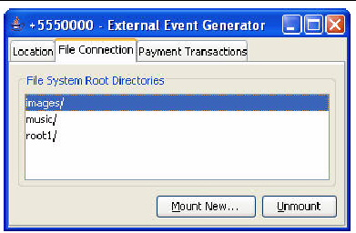

| Sun Java Wireless Toolkit for CLDC User's Guide |
| Sun Java Wireless Toolkit for CLDC User's Guide |
| C H A P T E R 10 |
|
Using the PIM and FileConnection APIs |
The Sun JavaTM Wireless Toolkit for CLDC supports JSR 75, the PDA Optional Packages (PDAP) for the J2ME Platform. JSR 75 includes two independent APIs:
This chapter describes how the Sun JavaTM Wireless Toolkit for CLDC implements the FileConnection and PIM APIs.
On a real device, the FileConnection API typically provides access to files stored in the device's memory or on a memory card.
In the Sun JavaTM Wireless Toolkit for CLDC emulator, the FileConnection API enables MIDlets to access files stored on your desktop computer's hard disk.
The files that can be accessed using FileConnection are stored in subdirectories of workdir\appdb\skin\filesystem. For example, the DefaultColorPhone emulator skin comes with a root directory installed called root1, which contains a file called Readme and an empty directory named photos. The full path of the file is:
Each subdirectory of filesystem is called a root. The Sun JavaTM Wireless Toolkit for CLDC provides a mechanism for managing roots. While the emulator is running, choose MIDlet > External events from the emulator window's menu. A utility window for adding and removing roots appears.
FIGURE 10-1 Managing File System Roots

The mounted roots and their contents are available to applications using the FileConnection API.
To add a new root directory, click Mount New and fill in a name for the directory. To make a directory inaccessible to the FileConnection API, select it in the list and click Unmount.
The Sun JavaTM Wireless Toolkit for CLDC emulator stores contact, calendar, and to-do information in standard files on your desktop computer's hard disk. All information is stored in workdir\appdb\skin\pim. This directory is shared by all running emulators. Lists are stored in subdirectories of the contacts, events, and todo directories. For example, a contact list called Contacts is contained in:
Inside the list directory, items are stored in vCard (.vcs) or vCalendar (.vcf) format (see http://www.imc.org/pdi/). Contacts are stored in vCard format, while calendar and to-do items are both stored in vCalendar format.
| Sun Java Wireless Toolkit for CLDC User's Guide |
Copyright © 2007, Sun Microsystems, Inc. All Rights Reserved.